AI PRESENTATION WORKFLOW / 科研组会预设
用户于 2026-10-18 接受这套 11 页完整概念，S04 是本套实际视觉基准。独立素材与最终 PPTX 未制作验收。复用的是参考图与流程；新论文内容、页数与构图重新设计，生成结果不保证像素相同。
整套总览 · 制作与复现流程 · 图像与提示词清单 · 实际反馈 · 15 分钟讲述提纲 · Jiang et al. 2024 原文 · CC BY 4.0
独立复现也已整套认可：查看另一名 agent 重新制作的完整 11 页。该科学图解语言已选为科研 PPT 的默认主展示风格，独立素材与最终 PPTX 仍未制作验收。
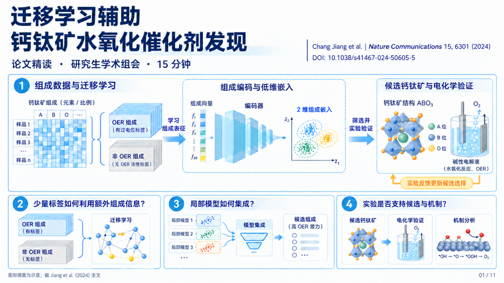
S01 · 迁移学习辅助钙钛矿水氧化催化剂发现 · 30 秒
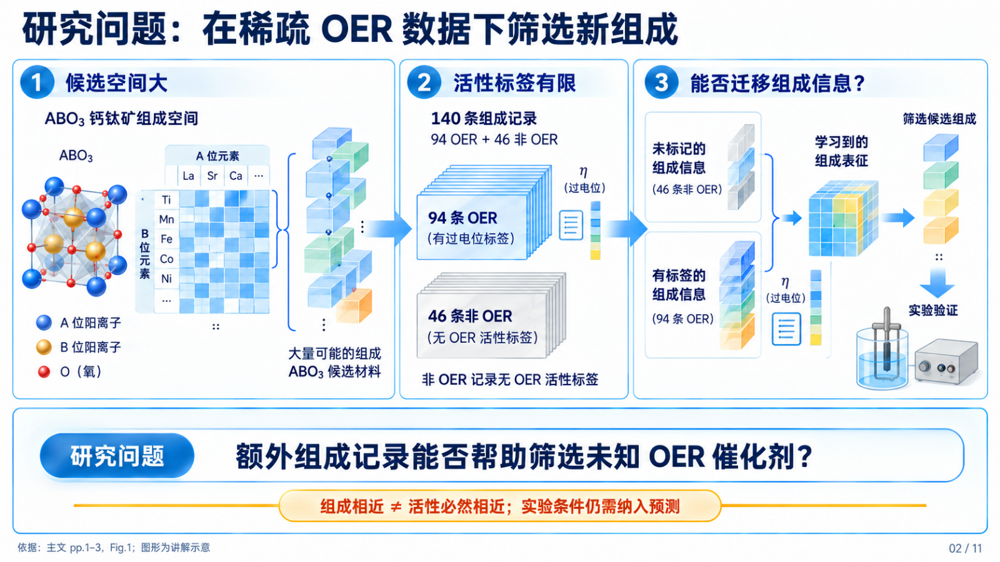
S02 · 研究问题：在稀疏 OER 数据下筛选新组成 · 75 秒
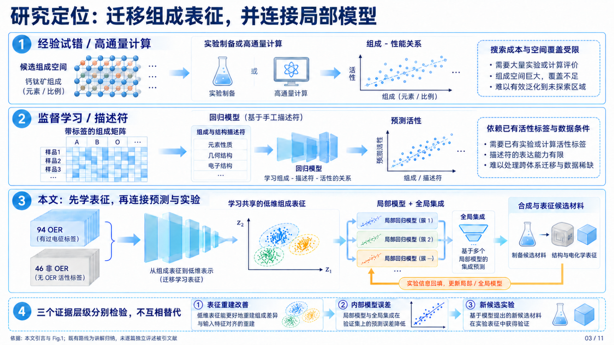
S03 · 研究定位：迁移组成表征，并连接局部模型 · 60 秒
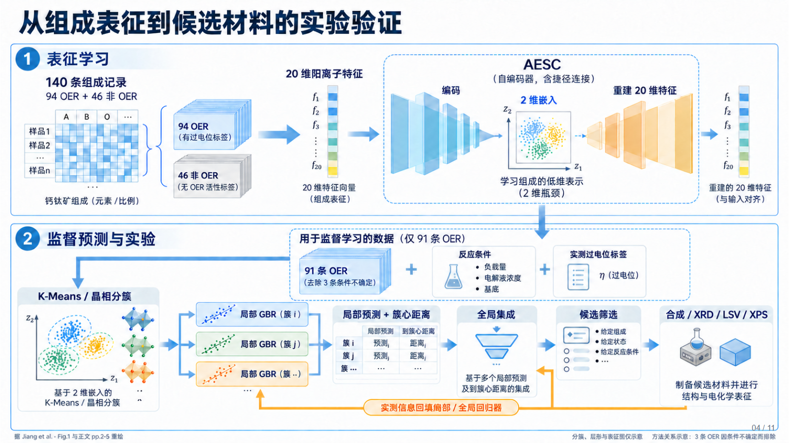
S04 · 从组成表征到候选材料的实验验证 · 105 秒
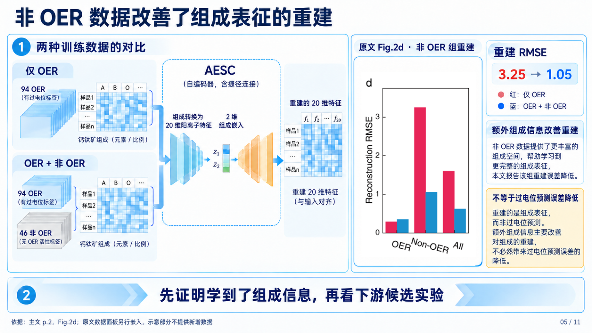
S05 · 非 OER 数据改善了组成表征的重建 · 75 秒
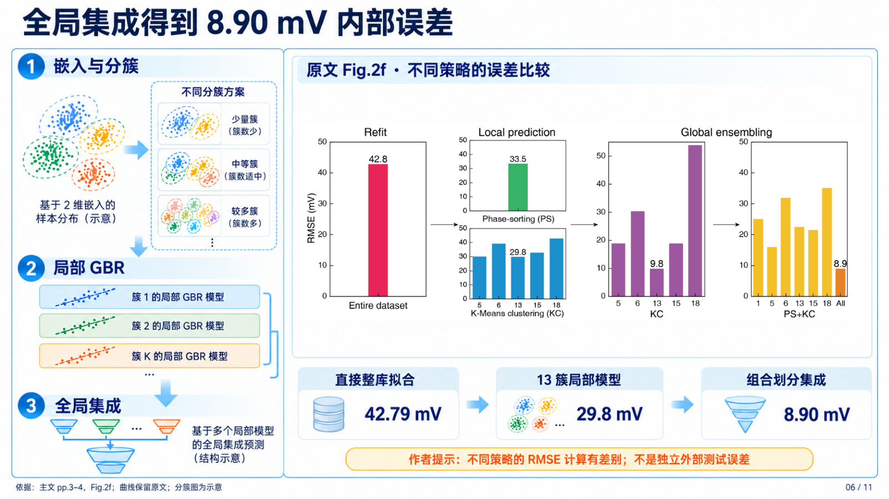
S06 · 全局集成得到 8.90 mV 内部误差 · 100 秒
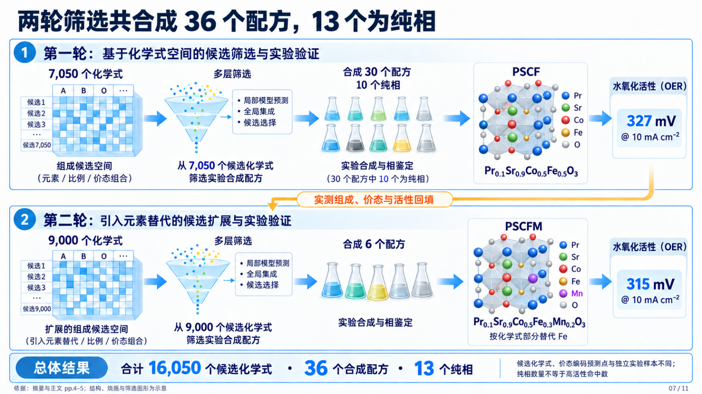
S07 · 两轮筛选共合成 36 个配方，13 个为纯相 · 85 秒
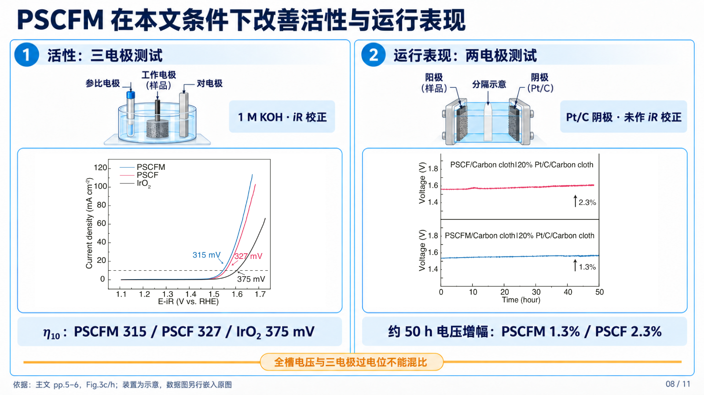
S08 · PSCFM 在本文条件下改善活性与运行表现 · 100 秒
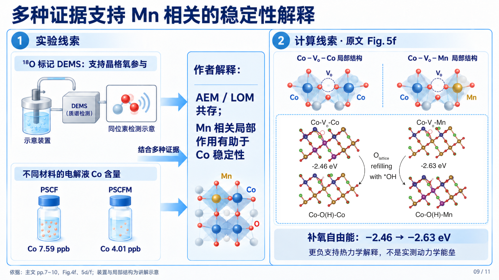
S09 · 多种证据支持 Mn 相关的稳定性解释 · 90 秒
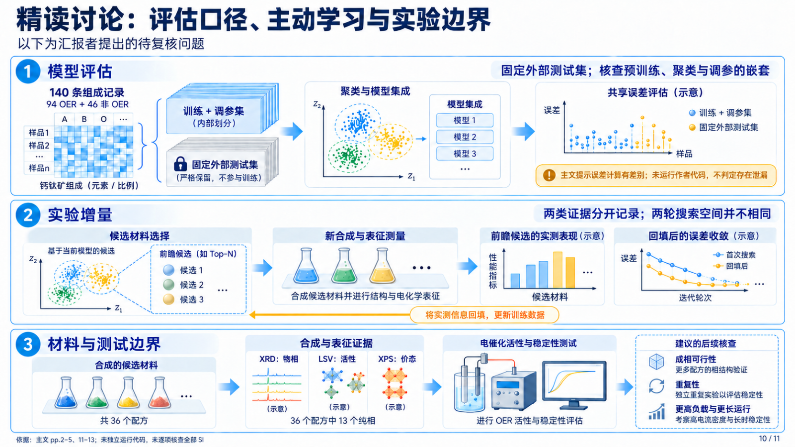
S10 · 精读讨论：评估口径、主动学习与实验边界 · 110 秒
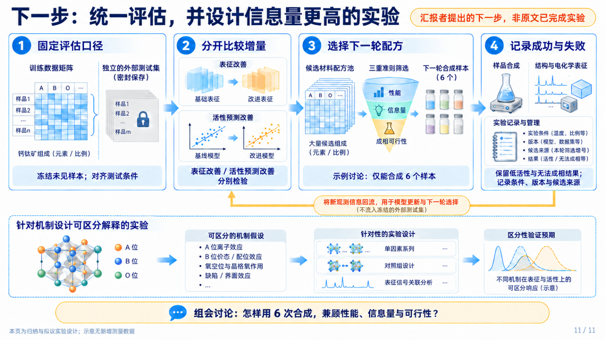
S11 · 下一步：统一评估，并设计信息量更高的实验 · 70 秒